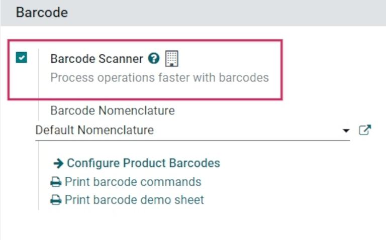
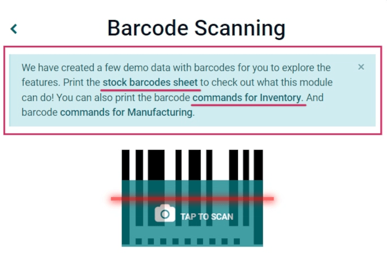

Apply inventory adjustments with barcodes¶
In a warehouse, the recorded inventory counts in the database might not always match the actual, real inventory counts. In such cases, inventory adjustments can be made to reconcile the differences, and ensure that the recorded counts in the database match the actual counts in the warehouse. In Odoo, the Barcode app can be used to make these adjustments.
These adjustments can be done in real time using an Odoo-compatible barcode scanner or the Odoo mobile app.
Note
For a list of Odoo-compatible barcode mobile scanners, and other hardware for the Inventory and Barcode apps, refer to the Odoo Inventory • Hardware page.
See also
Enable Barcode app¶
To use the Barcode app to create and apply inventory adjustments, it must be installed by enabling the feature from the settings of the Inventory app.
To do so, go to the . Then, scroll down to the Barcode section, and click the checkbox next to the Barcode Scanner option.
Once the checkbox is ticked, click Save at the top of the page to save changes.
After saving, a new drop-down menu appears under the Barcode Scanner option, labeled Barcode Nomenclature, where either Default Nomenclature or Default GS1 Nomenclature can be selected. Each nomenclature option determines how scanners interpret barcodes in Odoo.
There is also a Configure Product Barcodes internal link arrow, along with a set of Print buttons for printing barcode commands and a barcode demo sheet.
See also
For more information on setting up and configuring the Barcode app, refer to the Set up your barcode scanner and Activate the Barcodes in Odoo docs.
Perform an inventory adjustment¶
Begin by navigating to the dashboard, where different options will be displayed, including Operations, Inventory Adjustments, and Batch Transfers.
To create and apply inventory adjustments, click on the Inventory Adjustments button at the bottom of the screen.
Doing so navigates to the Barcode Inventory Client Action page, labeled as Inventory Adjustment in the top header section.

To begin the adjustment, first scan the source location, which is the current location in the warehouse of the product whose count should be adjusted. Then, scan the product barcode(s).
The barcode of a specific product can be scanned multiple times to increase the quantity of that product in the adjustment.
Tip
If the warehouse multi-location feature is not enabled in the database, a source location does not need to be scanned. Instead, simply scan the product barcode to start the inventory adjustment.
Alternatively, the quantity can be changed by clicking the ✏️ (pencil) icon on the far right of the product line.
Doing so opens a separate window with a keypad. Edit the number in the Quantity line to change the quantity. Additionally, the +1 and -1 buttons can be clicked to add or subtract quantity of the product, and the number keys can be used to add quantity, as well.
Example
In the below inventory adjustment, the source location WH/Stock/Shelf/2 was scanned, assigning
the location. Then, the barcode for the product [FURN_7888] Desk Stand with Screen was scanned
3 times, increasing the units in the adjustment. Additional products can be added to this
adjustment by scanning the barcodes for those specific products.

To complete the inventory adjustment, click the green ✅ Apply button with the check mark at the bottom of the page.
Once applied, Odoo navigates back to the Barcode Scanning screen. A small green banner appears in the top right corner, confirming validation of the adjustment.
Did you know?
Odoo’s Barcode application provides demo data with barcodes to explore the features of the app. These can be used for testing purposes, and can be printed from the home screen of the app.
To access this demo data, navigate to the and click stock barcodes sheet and commands for Inventory (bolded and highlighted in blue) in the information pop-up window above the scanner.
Manually add products to inventory adjustment¶
When the barcodes for the location or product are not available, Odoo Barcode can still be used to perform inventory adjustments.
To do this, navigate to the .
Doing so navigates to the Barcode Inventory Client Action page, labeled as Inventory Adjustment in the top header section.
To manually add products to this adjustment, click the white ➕ Add Product button at the bottom of the screen.
This navigates to a new, blank page where the desired product, quantity, and source location must be chosen.

First, click the Product line, and choose the product whose stock count should be
adjusted. Then, manually enter the quantity of that product, either by changing the 1 in the
Quantity line, or by clicking the +1 and -1 buttons to add or
subtract quantity of the product. The number pad can be used to add quantity, as well.
Below the number pad is the location line, which should read WH/Stock by default.
Click this line to reveal a drop-down menu of locations to choose from, and choose the
source location for this inventory adjustment.
Once ready, click Confirm to confirm the changes.
To apply the inventory adjustment, click the green ✅ Apply button with the check mark, at the bottom of the page.
Once applied, Odoo navigates back to the Barcode Scanning screen. A small green banner appears in the top right corner, confirming validation of the adjustment.